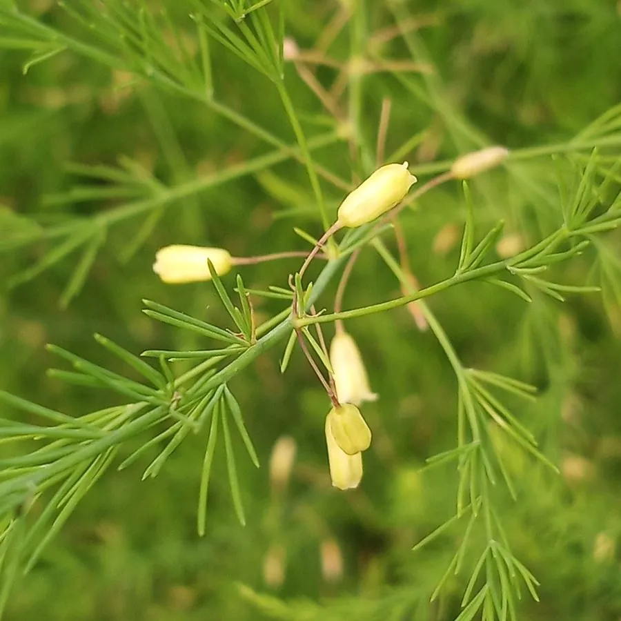

农作物与经济植物 · 植物界
芦笋 Asparagus officinalis

芦笋的嫩茎可食，口感鲜嫩，富含天门冬酰胺和膳食纤维，是高档蔬菜，栽培一次可连续采收十几年。
- 分类
- 门被子植物门纲单子叶植物纲目天门冬目科天门冬科属天门冬属
- 栖息环境
- 温暖湿润的沙壤土，喜光照充足、排水良好
- 地理分布
- 原产地中海与西亚，现主产于中国、秘鲁、德国等地
- 保护级别
- 暂无评估（栽培作物）
物种志
芦笋是天门冬科多年生草本，株高 1–2 m，地下有肉质根状茎和须根。茎直立，多分枝；叶片退化成鳞片状，光合作用由绿色针状的“叶状枝”完成。嫩茎从地下抽出，可食用；成熟植株开黄绿色小花，结红色浆果。雌雄异株。
芦笋原产地中海沿岸与西亚，栽培历史已有 2000 多年，如今世界各地广泛种植，中国是主要生产国之一。它喜温暖湿润、光照充足，适宜在疏松深厚、排水良好的沙壤土中种植，一次栽种可连续采收 10–15 年。嫩茎可鲜食、焯水凉拌、炒食、做汤，也可加工成罐头。芦笋富含天门冬酰胺、膳食纤维和叶酸，是公认的高档保健蔬菜。栽培中需注意防治茎枯病。
形态与习性
- 株高1–2 m
- 嫩茎从地下抽出，可食用
- 叶退化成鳞片，绿色叶状枝光合
- 采收一次栽种可采 10–15 年
- 营养富含天门冬酰胺、膳食纤维与叶酸
趣味知识
- 芦笋的叶子退化成鳞片，光合作用靠绿色的针状叶状枝。
- 芦笋一次栽种可连续采收十几年，是多年生蔬菜。
- 芦笋富含叶酸，是公认的高档保健蔬菜。